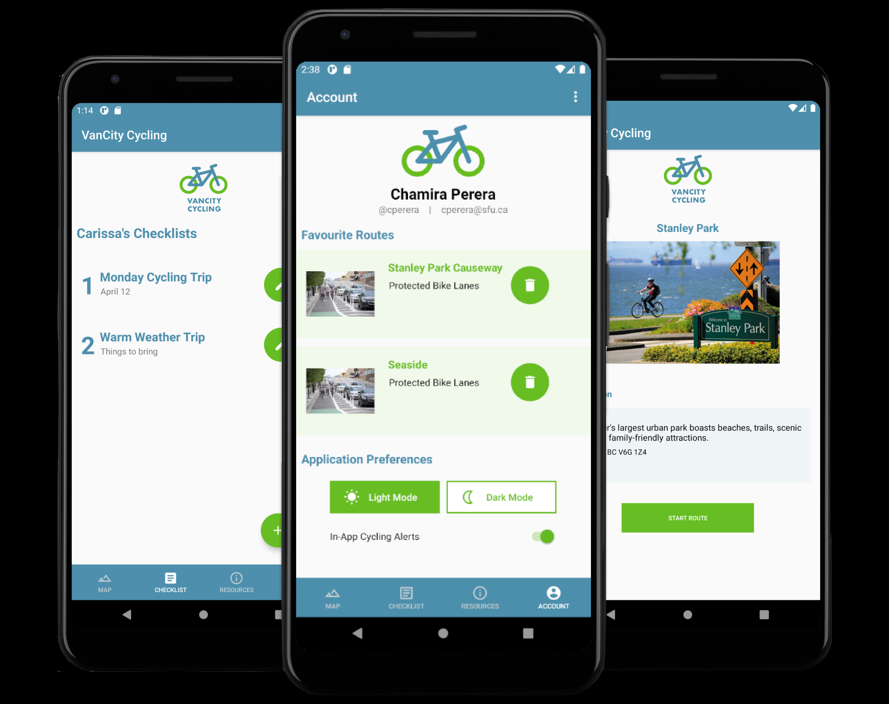
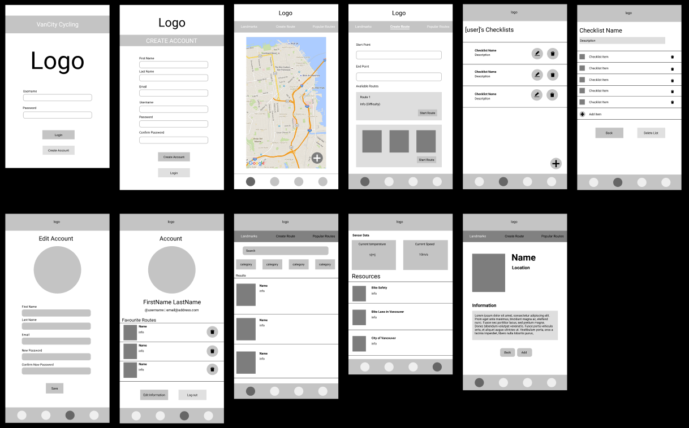
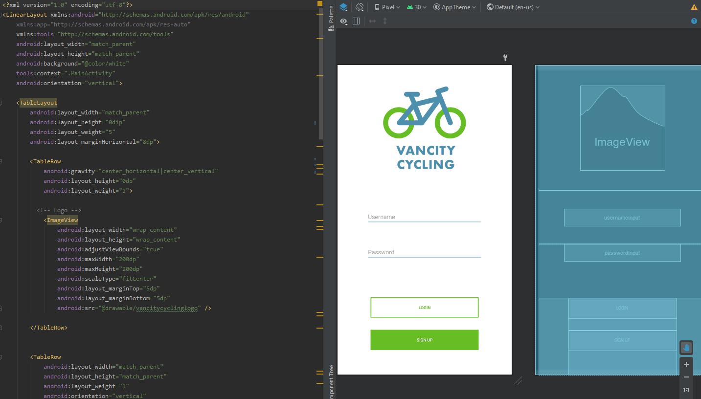

Description
VanCity Cycling is a mobile application for Android that allows novice cyclist to travel around the city of Vancouver. This was an academic project that
was completed in a two-person team where the goal was to encourage more Vancouverites to use cycling as an alternative mode of transportation. The app
features many tools that would make the cycling experience for novice cyclist as safe and as comfortable as possible. With Vancity Cycling users have the ability
to plan out the their cycling trips around the city of Vancouver and provides information that can help them get on the right track when beginning their cycling
experience. After 8 weeks of buiding and refining this application we were given the opportunity to present Vancity Cyclying to the city of Vancouver's Transportation
Division where we gave a demonstration of a walkthough of the app.
Team & Roles
Carissa Shum
Designer & Application Development
Chamira Perera
Designer & Application Development
Tools Used
Figma
Android Studios
Java
XML
Duration
8 weeks
(FEB - APR 2021)
Wireframe and Interface Design
The first part of the project consisted of interface layout, feature ideation, colour layout and overall design of the app. This was done through Figma
where interfaces of each possible page was designed, such as the main map screen or the account login page. While designing the interface different
features were considered as well as different colour palettes. Ultimately the city of Vancouver colour palette was chosen to match the city the app was being used in.
Once the entire interface was designed on Figma the layout was then coded in Android Studios using XML.


Figma Wireframes and XML code of App Interface
Application Features
The main functionality of the app was to provide a map and a route for cyclist to follow, so the map of the city was
central focus of the homepage with the options to set your route based off of user search entry or by selecting landmarks in the application's database. Users also
have the ability to create checklist that gave them the opportunity to create detailed list of what they needed to help them prepare for their trips. Users can also
edit and update these lists as well as delete certain tasks in a checklist or the whole checklist itself.
Database & User Preferences
The database was created using SQLite which was able to store user information such as account information (first & last name, username, password,etc.) as
well as the ability to store favourite cycling routes. The database also stored checklist data so that each user of the app hace their own checklists stored. The
database also contained all the bike routes in Vancouver and had data to predetermined routes that users have a choice to choose from. The application also has
has the ability to store user setting such as setting and saving light or dark mode.
Database Functionality in App. Video Credit: Carissa Shum
Map Functionality
Landmarks, Popular Routes, and Create Route Interface
In the map section of the application users have the options of creating their cycling route by either creating their own route, selecting from their most popular routes,
or selecting a route to a landmark in Vancouver. In the create route section users had the ability to choose their start and end points by searching each point.
The application will look through the database to see if there are available routes to the selected points and then display whichever routes for the user to choose from.
Each option provided will also give the user detailed information about their
selected route such as the route number, route distance, duration and bikeways type. Once the route is selected an outline of the trip will appear on the map
and will adjust according to the user’s position.
The next way to create a cycling route was by using the popular routes section. In this section users will have access
to different predetermined routes that can be selected to cycle. These routes can be filtered to help users find the routes
that they are most comfortable with. Users can then favourite these routes which are stored in the SQL database where users will then be
able to save and have access to if they want to cycle that particular route again.
Lastly a landmarks page was created with different popular landmarks across Vancouver that could be visited by cycling.
This section of the app would display the landmarks in a list form and when the user selected the landmark they wanted to visit,
the app would then create a route for them using Directions API from their current location to the landmark.
Sensor Data & Extra Features
The app also took advantage of the GPS information as well as information provided by the sensors in android devices that would benefit a cycist while on their trip.
The app uses GPS to determine where the user is and then gets the current temperature for the user. If the temperature goes below 7ºC or above 18ºC and the
user plans to start a trip they will be alerted of weather it is hot or cold outside and will be reccomended to plan for their trip accordingly. The GPS was also used
to track the users current location so as they are cycling their speed is displayed on resource page and will adjust accordingly.
The air pressure sensor also provides information which lets users know if they are experiencing a more challenging part of their trip. If the sensor reads that air
pressure is increasing then that means the cyclist is on an incline. Resources are also provided to users that link to bike laws in Vancouver, gerenal cycling safety,
and access to the city of Vancouver website where they can learn more about the city they are cycling in.
 Resource Page with Sensor data & In-app Weather Alerts
Resource Page with Sensor data & In-app Weather Alerts
The last feature that was implement was the ability for users to switch between light and dark mode. This was a user preference setting that users could toggle
and could be saved based on the user's account.
Light & Dark Mode Functionality
Final Product
The video below is an overview and walk through of the application and it's features. For future development of Vancity Cyclying, the idea of a rating system for
the routes were discussed but due to deadline constraints were left out of the presented app. Throughout the 8 weeks working on the projects I've developed a comfotable
understanding of designing and creating mobile applications such as using XML for front-end mobile application design and Java, JSON, and web APIs for backend mobile application
development. Our group was lucky enough after presenting this to our peers to get the opporutnity by City of Vancouver to present a demonstration of the
VanCity Cycling to the transportation division of work done by bundergraduate students.
Final Video Application walkthrough. Video Credit: Carissa Shum